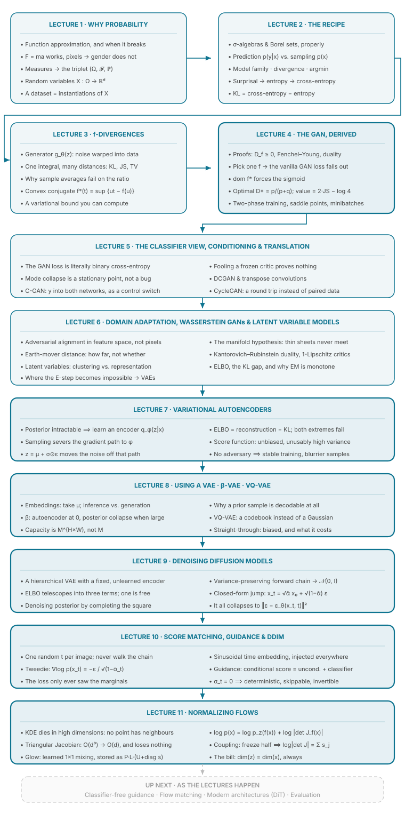

Deep Generative Models Notes
Personal study notes from IISc's E1 286s Deep Generative Models (Prof. Prathosh A. P.) — from probability foundations through GANs and VAEs to the diffusion models behind modern image generation, and how to steer and accelerate them.
My rewritten lecture notes, one chapter per lecture. Everything a generative model does — GPT sampling text, diffusion models painting images — reduces to one problem: estimate an unknown probability distribution from finite samples, then learn to sample from it. The first two lectures build that statement up from scratch and end with the standard training recipe; the next two turn it into a working algorithm, ending with the 2014 GAN derived line by line out of convex duality rather than intuition — and the fifth reads that same objective the opposite way round, as a generator tutored by a classifier, then builds out the practical family: DCGAN, conditional GANs and CycleGAN. The sixth repairs the flat-gradient problem with optimal transport and then turns toward latent variable models, the seventh builds the VAE on top of it, and the eighth puts it to work and then replaces its continuous latent with a discrete codebook. The ninth arrives at denoising diffusion, where the encoder is not learned at all, the tenth makes it steerable and fast, and the eleventh turns to the one family that keeps the exact likelihood — normalizing flows, built entirely out of the change-of-variables formula. More notes (flow matching, modern architectures) will follow as the course progresses.
Series Concept Map
